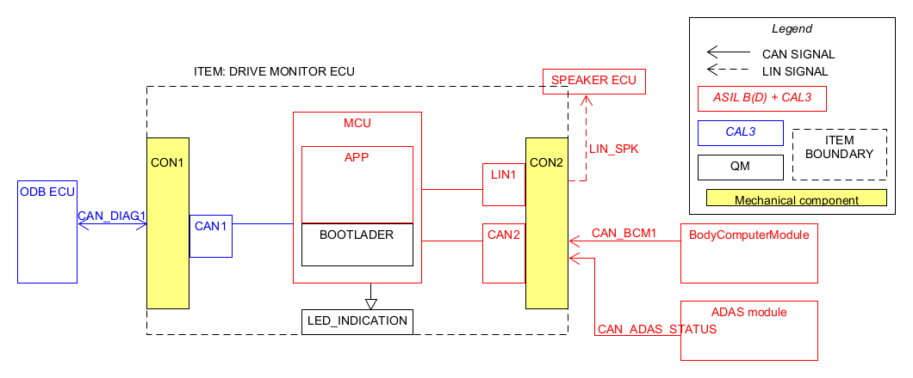
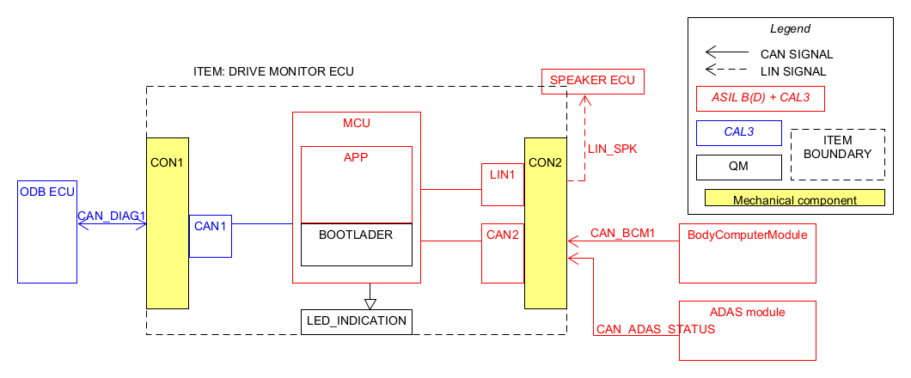

1. Static Architecture Diagrams

Design Document Document
Export to ReqIF
CAN1 interface shall be used to communicate with OBD ECU
LIN Interface shall be used to communicate to Horn ECU
MCU Application shall be used for realization of ECU logic, diagnostics and CAN/LIN communication stack
MCU Bootloader shall be used for realization of ECU software update, diagnostics and CAN communication stack